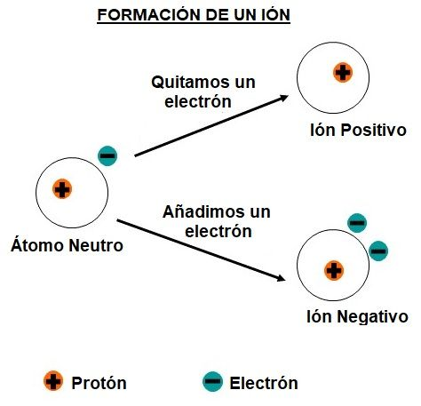

Un átomo está compuesto de protones, neutrones y electrones. Cada elemento de la tabla periódica tiene protones, neutrones y electrones, lo que hace que cada elemento sea un átomo. Cada elemento tiene su propio número de protones (positivos), neutrones (sin carga) y electrones (negativos) . El número de protones y electrones es igual. Un átomo neutro es un átomo o elemento sin carga total, lo que significa que no tiene una carga total positiva o negativa. Por ejemplo, un átomo del elemento carbono tiene 6 protones y 6 electrones. Se trata de un número igual de protones con carga positiva y electrones con carga negativa, lo que crea un elemento neutro (sin carga).
Un ion es un átomo con una carga (positiva o negativa). Para formar un ion, un elemento debe ganar o perder un electrón. Ganar o perder electrones crea un ion. Si un átomo gana un electrón, tiene más electrones que protones, lo que crea un átomo de un elemento con carga negativa en general. Si un átomo pierde un electrón, se carga positivamente porque tiene más electrones que protones.
Los cationes se forman cuando un átomo adquiere carga positiva, es decir, tiene más protones que electrones. La mayoría de los metales de la tabla periódica (ubicados a la izquierda de la tabla periódica) son átomos que ceden sus electrones de valencia de su capa de energía más externa.
El mecanismo por el cual los átomos se convierten en cationes comienza con un metal que pierde electrones de la capa de energía externa. Debajo de esa capa hay una regla del octeto completo. El octeto hace que el átomo sea estable pero no neutral, ya que el átomo tiene una carga negativa general. Ese átomo está cargado positivamente porque ha cedido electrones. Después de que los electrones se han transferido, el átomo se convierte en un catión.
Ejemplo 1:
El sodio (Na) es un metal que cederá su capa energética exterior para tener un octeto completo una vez que se entreguen los electrones. El sodio se convierte en un catión con una carga +1.
¿Cómo se forma un anión y un catión?
Se forman cuando un metal pierde electrones, y los no metales ganan esos electrones. La atracción electrostática entre positivos y negativos atrae las partículas entre sí y crea un compuesto iónico, por ejemplo el cloruro de sodio.
Por otro lado, un metal reacciona con un no metal para formar un enlace iónico. A menudo se puede determinar la carga por un ion que normalmente ha tenido por la posición del elemento en la tabla periódica:
Los metales alcalinos (los elementos IA) pierden un electrón para formar un catión con una carga 1+.
Los metales alcalinos de la tierra (los elementos IIA) pierden dos electrones para formar un catión 2+.
El aluminio, un miembro de la familia IIIA, pierde tres electrones para formar un catión 3+.
Los halógenos (elementos VIIA) tienen siete electrones de valencia. Todos los halógenos ganan un electrón para llenar su nivel de energía de valencia. Y todos ellos forman un anión con una sola carga negativa.
Los elementos VIA ganan dos electrones para formar aniones con una carga 2-.
Los elementos VA ganan tres electrones para formar aniones con una carga de 3-.
Los cationes son iones con carga positiva que se forman cuando los átomos neutros pierden electrones; los aniones son iones con carga negativa que se forman cuando átomos neutros ganan electrones. Es posible predecir las cargas de los iones monoatómicos comunes al observar los números de grupo de la tabla periódica. Sin embargo, muchos de los metales de transición son polivalentes, lo que significa que pueden formar cationes con varias cargas. Al nombrar estos cationes o compuestos, es necesario especificar su carga.